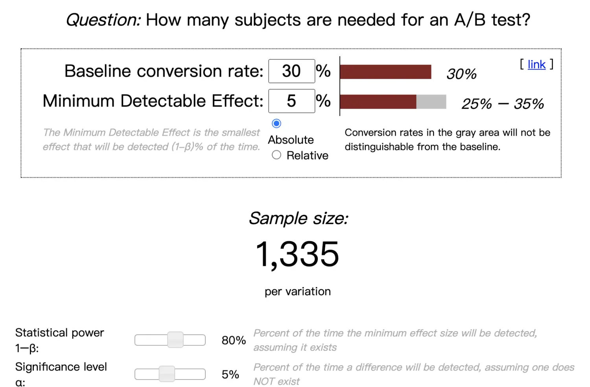
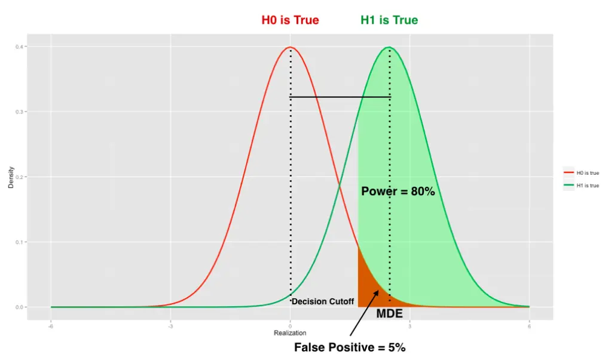

本文介绍样本量对实验效果的影响，以及如何正确选择样本量。仅作为实验设计者可跳过最后数学推导过程，直接使用工具运算。
样本量的影响
假设一个这样的实验，按钮颜色对用户点击率的影响： 
假设A样式点击率30%，B样式点击率为40%。考虑以下两种情况：
- 当每个页面有10次访问时，直观感受上并不能证明B比A的点击率高。实际约65%的可能性差异是随机产生的。
- 当每个页面有1000次访问时，差异不像是随机产生了。实际只有约0.0002%可能性差异是随机产生的。
通过上面例子发现，相同的差异程度下，样本数量越多，我们越有把握两者并不相同。这也是符合生活经验的。
样本量选择原则
我们已经知道了样本数越多，证据会越可信，那么样本数该怎么选择呢？
实验角度，样本量越多越好
样本数量变多，实验则有了更多的“证据”，实验的“可靠性”也就越强。
业务角度，样本量越少越好
样本量应该越少越好，因为：
试错成本大。假设我们拿50%用的户来跑实验，但不幸的是，1周后结果表明实验组的总收入下降了20%。算下来，你的实验在一周内给整个公司带来了10%的损失。这个试错成本未免高了一些…
其它风险增加。移动端例子，假设B方案崩溃率增长，1%流量我们可以从容处理，50%流量会对业务造成严重影响，甚至事故定责。
流量有限。流量总数是确定的，同类型的实验不能重叠，实验流量更小，就可以同时运行更多的实验。
样本量如何选择
通过样本量计算工具可以直接得到，有很多的在线工具，例如对转化率可使用Evan’s Awesome A/B Tools

参数解释
- Baseline conversion rate：填入实验前估测到的转化率，可以通过旧数据统计作为估算。
- Minimum Detectable Effect：填入希望观测到的最小效果。填入实验的预期。
- Statistical power：1 - 假阴性概率。实验效果真实有效时，能被正确发现的概率。
- Significance level：假阳性概率。实验实际没有效果时，被错误发现的概率。
总结
样本量选择一般过程：打开样量计算器，填入α, power, MDE，填入已知参数（转化率、均值、方差等），得到结果。 ___
附录：样本量计算原理
需要读者有一定数理统计知识，跳过不影响实验设计。从单尾假设检验出发进行推导，然后扩展到双尾假设检验。
单尾假设检验

定义θ = μ2 - μ1，图中对应假设可转换为： 原假设：θ = 0，此时对应红色曲线 备择假设：θ > 0，此时对应绿色曲线
μ1：方案A的期望值，不可改变。 μ2：方案B的期望值，不可改变。 $ x$：方案A的均值，会随机波动。 $ y$：方案B的均值，会随机波动。
$ = ( > C | = ) $ ，红色曲线下，红色面积占比。 $ = ( <= C | > ) $ 。 $ power = ( > C | > ) $ ，绿色曲线下，绿色面积占比。 MDE：根据期望效果取的值，会参与样本量计算 μ2 - μ1 >= mde时，power大于等于预设值，实验容易显著。 μ2 - μ1 < mde时，power小于预设，实验不容易显著。
在$ > C \(中，C为预设常量，\) x\(、\) y\(通过实验获取无法控制，唯一可以改变的是\)SD( y - x))$，样本量增大 -> $ SD( y - x)) $减少 -> 实验显著概率升高。
计算过程： \({SD( \bar y - \bar x)} = MDE / [ \phi^{-1} (\alpha) + \phi^{-1} (power )]\) ,
x、y样本量同为n，标准差同为$$时， \({SD( \bar y - \bar x)} = \sqrt{2\sigma ^{2}/ n}\),
易得\(n = 2\sigma ^{2} [ \phi^{-1} (1- \alpha) + \phi^{-1} (power )]^{2}/MDE^{2}\)
双尾假设检验
定义θ = μ2 - μ1，双尾情况下对应假设： 原假设：θ = 0； 备择假设：θ ≠ 0 ，等价于 θ > 0 or θ < 0。
双尾假设检验一般是对称的，在此情况下有： 1. $= ( > C1 | = ) + ( < C2 | = ) $ 2. $( > C1 | = ) = ( < C2 | = ) $
正态分布的概率密度函数特点为左右对称(钟形曲线)，由此可知： $ C1 > 0, C2 < 0, |C1| = |C2| $
可以理解为一个α水平的双尾假设检验，等于两个α/2水平的单尾假设检验。 将α/2带入单尾计算公式，得到双尾检验需要的样本量为： \(n = 2\sigma ^{2} [ \phi^{-1} (1 - \alpha/2) + \phi^{-1} (power )]^{2}/MDE^{2}\)